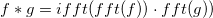
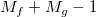
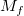

内容 |
Originのコンボリューションのアルゴリズムは、コンボリューション理論に基づいています。理論によると、応答信号のコンボリューションは、次式のように2つの信号のフーリエ変換を乗算し、積の逆フーリエ変換を実行するのと同じです。そのため:

この式は次の仮定が有効な場合に成り立ちます。
しかし、実際のデータは常にこれら2つの条件を満たすとは限りません。コンボリューション理論を適用できるように、データにいくつか0を付加する必要があります。同時に、0付加と周期性の条件が結果に影響を与えないという保証する注意が必要です。
循環コンボリューションでは、入力範囲の外側のデータポイントは、周期的に繰り返されると考えられ、それにより最初の条件が満たされます。両方の入力シーケンスの長さが等しくなるように短い入力データの最後に0が付加されます。
しかし、線形の場合、入力範囲外のデータポイントは0と見なされます。信号が周期的だと仮定することは、結果の先頭のいくつかのデータは、周期の最後の方のデータが加えられるため、結果に影響を及ぼします。この影響を避けるために、ラップデータ用にバッファ領域をセットするため、0を付加する必要があります。付加した後、両方の入力は次式のようになります。

ここで および  は、 f および gの長さを表します。
は、 f および gの長さを表します。
付加の後、コンボリューションの結果を計算するのに上記のような高速コンボリューションアルゴリズムが使われます。
<自動>がサンプリング間隔オプションで選択されると、サンプリング間隔は自動的に計算されます。
自動的に計算されるサンプリング間隔は、時間データの増加の平均で、これは通常入力信号と結びついているXデータが使われます。結びついているX列が無ければ、行番号が使われます。Originが増加の平均を取得するのに失敗した場合、サンプリング間隔は1にセットされます。